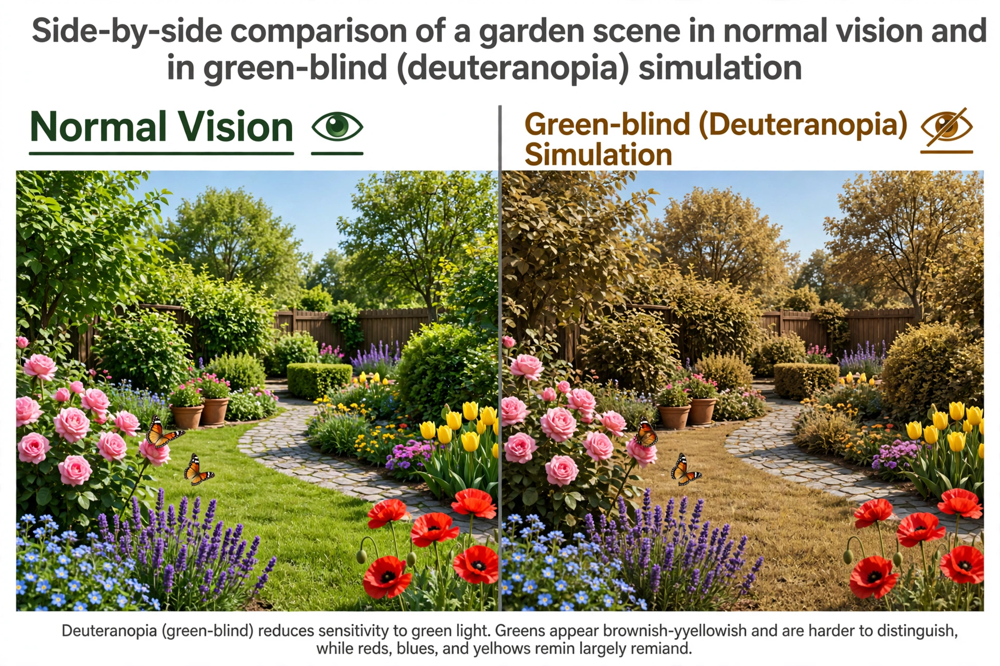

| Deuteranopia | |
|---|---|
 | |
| Type | Red–green colour vision deficiency, dichromacy |
| Cause | Absence of functional M-cones (green photoreceptors) |
| Inheritance | X-linked recessive (OPN1MW gene) |
| Prevalence | ~1.2% of males, ~0.01% of females |
Deuteranopia is a form of colour blindness in which the retina lacks functional medium-wavelength-sensitive cones (M-cones, the "green" photoreceptors). It is the most common dichromatic colour vision deficiency. Deuteranopes confuse reds, greens, browns and oranges within a band of the spectrum, but — unlike protanopes — their overall sensitivity to brightness across the spectrum is roughly normal, so red does not appear abnormally dark.
Without M-cones, colour discrimination depends only on the difference between L-cone and S-cone signals. Greens and reds of similar luminance become hard to distinguish; green traffic lights may appear whitish-green and can still be identified by position. Purple appears more blue, because its red component is not separately signalled. The milder analogue, deuteranomaly, in which the M-cone pigment is shifted toward the L pigment, is the commonest colour vision defect overall, affecting around 5% of males.
Deuteranopia arises from loss or non-expression of the OPN1MW gene on the X chromosome (Xq28), encoding the green cone opsin. The adjacent red and green opsin genes are highly homologous and prone to recombination errors during meiosis, which accounts for the frequency of red–green defects. Inheritance is X-linked recessive, so males are predominantly affected.
Screening uses pseudoisochromatic plates such as the Ishihara test (see vision test); the anomaloscope distinguishes deuteranopia from protanopia by the proportions of red and green light a subject mixes to match a yellow standard, and by the normal brightness of red seen by deuteranopes.
Deuteranopia can affect colour-coded information in diagrams, maps and wiring, and certain jobs (some aviation, maritime and electrical roles) impose colour-vision standards. Accessibility guidelines recommend not conveying information by red–green colour alone.
See also: Protanopia · Shinobu Ishihara · Colour blindness